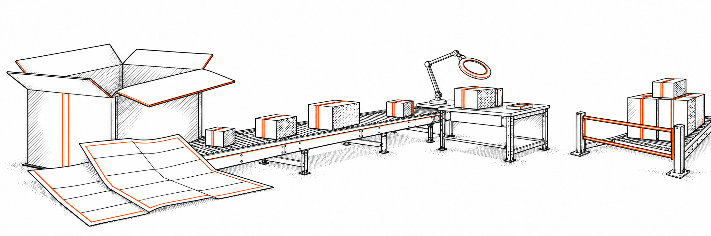

BOSS / Bioscillate Operating System by Seven
CONFIDENCE IS NOT A RECEIPT.
Make the task explicit. Carry its context. Inspect the result.

BOSS / Bioscillate Operating System by Seven
low / 01 of 15
Make the task explicit. Carry its context. Inspect the result.

Identify what enters the workflow, who may act, where the result belongs, and what evidence establishes completion. A confident answer is not a receipt. The shared frame makes those requirements explicit before you inspect a returned result.
Arrival records delivery. Inspection compares content with criteria. Release requires authorization covering the artifact, action, and destination. Begin manually so each boundary is visible; automate suitable steps after the process is understood.
BOSS / Bioscillate Operating System by Seven
medium / 02 of 15
A useful answer is a beginning. A repeatable process needs boundaries and evidence.
A vague request leaves the system to infer the objective, invent missing context, and choose what completion looks like. In a multi-step workflow, those assumptions travel into the next task. Fluency can make the handoff look complete before anyone has checked its content.
Define a bounded task. Identify what enters, who may act, and where the result belongs. Inspect returned evidence against the source. Recover affected work when input, access, or capability is missing. The learner retains responsibility for the frame and the acceptance decision.
Suppose a receiving system returns a clean workshop summary. The title and materials match, but the room number was supplied without a source. The response may look useful while failing the preservation rule. The governor identifies the deviation using the frame, not the model’s tone. Keep known facts separate from interpretations and unknowns. Decide which action can continue, which needs recovery, and what evidence would resolve the gap. This is the difference between getting an answer and establishing an inspectable result.
BOSS / Bioscillate Operating System by Seven
low / 03 of 15
A working agreement does not create shared memory, access, or identical capabilities.
Supply the source, identified version, objective, permitted actions, constraints, and return format.
A second chat does not inherit the first chat’s memory. The frame and source must travel together.
The frame does not create access or capability. Confirm readability and authorization for the affected task. Missing required source pauses dependent work; independent authorized work can continue.
BOSS / Bioscillate Operating System by Seven
high / 04 of 15
Use the fields to make the task testable, bounded, and traceable.
Give each execution a unique reference so the request, source, returned result, and recovery record can be associated. The identifier supports traceability; it does not prove correctness.
State a result that can be inspected. For the workshop example, extract title, schedule, materials, and unknowns from the supplied source. Avoid objectives whose completion depends only on a confident claim.
Identify the source material and version used for the run. Pin a version where supported; record limitations where it cannot be pinned. A filename alone does not establish readable content.
Name the receiving chat or resource precisely. Authorization applies to the affected action and destination. Moving the payload to another interface does not automatically authorize its receipt, modification, or release.
Define terms needed to interpret the task. Inventory means reporting the required source facts and missing details within the stated preservation rule. Definitions prevent the receiver from silently choosing a different meaning.
State the work that falls within scope, such as reading the source and returning an inventory. Capability is separate: having a tool available does not authorize its use for every action.
Specify prohibitions and preservation requirements. Do not invent a room number, date, location, or organizer. Do not silently correct extracted wording when the task requires exact source preservation.
Record absent, unreadable, or unverified information. An unknown room value may remain explicit while the inventory completes. Missing required source content pauses the action that depends on that source.
Name the acceptance checks that establish the result. Compare title, schedule, materials, and unknowns with the source. Record the verifier and limitations. Passing a visual review does not pass a content check.
State the required structure of the returned result. Format compliance is visible; content fidelity still requires the comparison named in the completion criteria.
BOSS / Bioscillate Operating System by Seven
medium / 05 of 15
Permitted actions and constraints answer different questions.
Read the supplied text. Extract the title, schedule, materials, and missing details. Report the inventory in the requested format. These actions establish the task’s authorized scope.
Do not invent a date, location, organizer, or room number. Preserve source wording where exact extraction is required. Do not browse or change an external destination unless the authorization covers it.
Written permissions describe what the executor is allowed to do. Active access controls can enforce limits in a connected system. Neither guarantees correct content. An executor might have a tool available but lack authorization for the requested destination. Another might be authorized yet unable to access the required source. Inspect these conditions independently. Before changing a document, sending a payload, or publishing a result, check scope for that specific action. Keep the returned evidence tied to the same objective and source version used in the request.
BOSS / Bioscillate Operating System by Seven
medium / 06 of 15
The Community Workshop example tests preservation of facts and missing information.
Title: Community Workshop
Schedule: The workshop starts at 10:00 a.m. on Saturday.
Materials: Bring paper and a pencil.
Open question: The room number has not been supplied.
Extract the known title, schedule, and materials. Report the room number as UNKNOWN. Do not infer it from prior workshops. An UNKNOWN label makes missing evidence explicit; it does not guarantee model behavior.
The missing room value is not the same as a missing source document. The supplied document contains enough evidence to inventory the known details and explicitly report the absent field. If the document itself is missing, the executor cannot extract its facts. Pause that dependent action and request the payload. Define completion as the required inventory and explicit unknown, not a fully populated schedule. Do not invent a calendar date from Saturday. Preserve source wording where the request requires exact extraction, and save the comparison that establishes acceptance.
BOSS / Bioscillate Operating System by Seven
low / 07 of 15
Perform the handoff manually so the transport and inspection steps are visible.
Create a read-only inventory request using the shared frame and practice source.
Paste the complete frame and source. Save the exact request you sent. Do not assume context transfers automatically.
Return the exact response and inspect it against the source. Record checks and unknowns. Keep the source comparison as part of the evidence package rather than treating agreement between chats as correctness.
BOSS / Bioscillate Operating System by Seven
high / 08 of 15
State labels describe different claims. Match the evidence to the claim.
The payload arrived at the destination. A receipt supports this arrival claim. It does not prove that required contents are readable, that the source was preserved, or that the requested task completed. Record what actually arrived and identify the destination.
The executor can access the required content. Reading a filename is metadata visibility, not content access. Ask for evidence appropriate to the task. If only some portions are visible, record that limit rather than treating it as exhaustive source access.
Destination acceptance was reported. This status applies when content is accepted into a receiving resource. It does not automatically establish complete fidelity. A reported successful import needs destination evidence before stronger claims about preservation or correctness can be made.
The named evidence checks passed and the verifier is identified. Compare the output with source anchors and completion criteria. Keep the verification scope explicit. Passing checks does not authorize external release; authorization must cover the artifact, action, and destination.
Required work remains. Interruption, unsupported capability, unfinished extraction, or incomplete verification may leave a task partial without an attempted operation failure. Identify completed work and affected work separately, then recover only the portion that still requires attention.
An attempted operation failed. Record which action was attempted, what failure was observed, and what evidence supports that description. Do not label missing information as an execution failure. Recovery may reroute the operation within existing authorization or require expanded scope.
Evidence is insufficient to establish the claim. This may describe an absent room number or unverified destination content. It is distinct from FAILED. Do not substitute fluency or agreement between models for missing facts.
BOSS / Bioscillate Operating System by Seven
low / 09 of 15
A separate missing-input attempt teaches recovery rather than imagined success.
Use a separate attempt. Observe whether the receiver requests input, fabricates details, or returns incomplete work. These are possible behaviors, not guaranteed results.
Record the actual response. Supply the missing practice source and repeat the bounded request.
Inspect the new response against the source. Recover affected work without duplicating completed steps. Preserve the missing-input attempt and recovery record.
BOSS / Bioscillate Operating System by Seven
medium / 10 of 15
The reported relay illustrates a format bottleneck; it is not an independently verified archive.
The podcast describes a ZIP delivery whose file names were visible while contents were not readable. Individual files improved access. An inaccessible markdown file was later supplied as pasted plain text. These are reported observations from the relay, not proof that every source reached the destination intact.
Identify the precise access gap. Use a readable format within authorized scope. Request destination evidence. An import receipt supports acceptance; it does not establish exhaustive source fidelity. Do not upgrade sampled evidence into a full-document verification claim.
The locked-package analogy explains access, not proof of correctness. Receiving a package establishes arrival. Reading its label establishes metadata visibility. Opening it establishes some access to contents. Inspection must still compare those contents with the expected source. A record that one document was accepted does not establish that every document was imported. Name which source was checked, what was visible, and what remains unknown. Preserve recovery details so later automation can handle the same format boundary without repeating already completed work.
BOSS / Bioscillate Operating System by Seven
low / 11 of 15
NotebookLM audio generation exposed a limitation during an attempted programmatic action.
Programmatic Audio Overview generation was unsupported during an attempted action. This is a reported production example, not an observed pre-action capability check.
Confirm that existing authorization covers the new tool, action, and destination. Additional authorization is needed where scope expands.
The activity moved to the web interface. Checking capability earlier is the proposed improvement. Reported import success does not establish full-text fidelity.
BOSS / Bioscillate Operating System by Seven
medium / 12 of 15
Manual steps correspond to transport, scope enforcement, and acceptance checks.
Choosing a receiving chat selects the destination and tool route. Carry the source as an identified payload. The frame defines objective and permitted actions; it does not create access, memory, or capability. Check what the receiver can actually use first.
Stating permitted actions defines authorization scope; access controls may enforce it. Comparing returned output with the source is validation against named criteria. Automated transport must preserve the same distinctions between receipt, readability, acceptance, and verification.
BOSS / Bioscillate Operating System by Seven
medium / 13 of 15
Model output and external execution are distinct. Neither transfers command responsibility.
AI supports interpretation and probabilistic reasoning about supplied content. Rules evaluate explicit conditions. Both may work within one activity, but acceptance checks must remain inspectable. Fluent output is not evidence that a system action occurred.
APIs let authorized systems act; RPA executes configured interactions. Choose the mechanism that fits the task. Availability does not grant authority. Record the action, destination, and returned evidence before assigning a stronger status.
A workflow may combine all four mechanisms or use only the ones required. Inspect the result against the same acceptance criteria in every case. Model output is not an external action; successful execution is not proof of source fidelity.
BOSS / Bioscillate Operating System by Seven
low / 14 of 15
Evidence acceptance and external distribution are separate checkpoints.
Identify the source anchors, acceptance checks, verifier, and limitations. If checks do not pass or evidence is insufficient, hold the affected result for review.
VERIFIED does not grant permission to deploy, publish, or forward. Existing explicit authorization may already cover release; additional authorization is needed only when scope expands.
Check the artifact, action, and exact destination. Evaluate visual and content acceptance separately. A polished artifact can still fail content checks.
BOSS / Bioscillate Operating System by Seven
high / 15 of 15
Agreement between models is not proof of correctness.
Submit the actual ten-field agreement used for the run: objective, source identifiers, destination, permitted actions, constraints, unknowns, acceptance checks, and return format. This is the comparator for the handoff, not a retrospective claim that everything went well.
Keep the exact request carried to the receiving system, including the source payload actually supplied. A planned request is not evidence of delivery. Identify intentional missing-input attempts separately.
Save the exact response returned by the receiving executor. Do not replace it with a polished summary. Identify claims from the source, interpretations added by the model, and missing information.
Record the checks performed against the identified source version: verifier, acceptance criteria, observed results. Separate visual acceptance from content acceptance.
Describe the missing input, unsupported capability, or failed operation actually observed. Record what changed and what was rechecked. Recover affected steps without repeating successful work.
List what remains unknown and what evidence could resolve it. A manual rehearsal does not prove production behavior; future integrations need their own checks. Agreement between models is not proof of correctness.